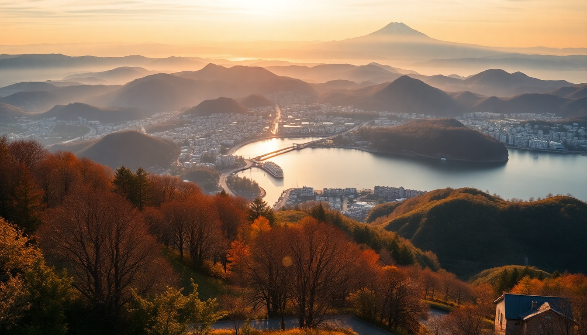

Best Day Trips from Tokyo: Nikko, Kamakura & Hakone

I’ve done all three of these day trips from Tokyo multiple times, and each one delivers something completely different. Nikko hits you with ornate temples and mountain air. Kamakura is a relaxed coastal ride with a giant Buddha. Hakone gives you lake views and hot springs if you time it right. Here’s what I learned—the good, the overhyped, and the logistical hacks that actually matter.
What makes Nikko worth the long train ride?
Nikko is the furthest of the three from Tokyo—about two hours each way on the Limited Express Spacia or Revaty trains from Asakusa. That sounds brutal for a day trip, but it’s worth it if you want scale. The Toshogu Shrine complex is over-the-top: gold leaf, carvings of sleeping cats and imaginary elephants, and the famous “See No Evil, Speak No Evil, Hear No Evil” monkeys. It’s the resting place of Tokugawa Ieyasu, and the place feels like a Shinto theme park in the best way.
- Toshogu Shrine – The main draw. Buy the combined ticket for the inner sanctuary and the ornate Yomeimon Gate.
- Shinkyo Bridge – A red lacquer bridge just past the train station. You can’t walk on it without paying, but the photo from the public path is fine.
- Kanmangafuchi Abyss – A 10-minute walk north of the shrines. A row of stone Jizo statues along a river. Quiet, eerie, and usually empty.
- Lunch at Hippari Dako – A tiny soba shop near the shrine entrance. Expect a wait, but the soba and tempura are worth it.
One warning: Nikko gets packed by 10:30 AM, especially in autumn. Take the first train from Asakusa (around 6:30 AM) and you’ll have the place almost to yourself for an hour.
Is Kamakura too touristy to enjoy?
Kamakura is crowded on weekends—no sugarcoating that. But it’s also only an hour from Tokyo on the JR Yokosuka Line, so the convenience is hard to beat. The trick is to go on a weekday and skip the main street near Komachi-dori if you hate crowds. Instead, head straight to Kotoku-in to see the Great Buddha (Daibutsu). It’s a 13-meter bronze statue sitting in the open air since a tsunami washed away the hall that once housed it. No roof makes it more impressive.
- Kotoku-in – The Great Buddha. Pay 300 yen to go inside the statue (it’s hollow, and yes, you can see the rivets).
- Hase-dera Temple – A five-minute walk from the Buddha. Climb the terrace for a view of Yuigahama Beach and the coastline.
- Tsurugaoka Hachimangu Shrine – The main shrine at the end of the long approach. Walk up the steps, but skip the souvenir stalls.
- Lunch at Kamakura Ichibanya – Curry rice near the station. Cheap, fast, and they serve a “level 10” spice that actually hurts.
- Zeniarai Benten Shrine – A cave shrine where you wash money in spring water for good luck. Odd but memorable.
The Enoden tram line that runs along the coast is also worth a ride—just one stop to Inamuragasaki for a sunset view. But don’t bother with the Kamakura Museum of National Treasures unless you have a specific interest in samurai swords.
Can you really do Hakone in a single day?
Yes, but you’ll be moving fast. Hakone is the classic “loop” trip: take the Odakyu Romancecar from Shinjuku to Hakone-Yumoto, then a bus or train up to Gora, then the Hakone Tozan Cable Car and Ropeway over the volcanic valley, then a boat across Lake Ashi, and finally a bus back to the station. The whole loop takes about six hours if you don’t linger. I’ve done it twice, and the second time I skipped the boat—it’s scenic but slow, and the ropeway views of Mount Fuji are better anyway.
- Hakone Open-Air Museum – Sculptures in a forest setting, plus a foot bath. Stop here between Gora and the ropeway.
- Owakudani Valley – The volcanic vent area where they boil eggs in sulfuric water. The black eggs turn the shell black from the sulfur. Eat one for the novelty, not the taste.
- Lake Ashi Pirate Ship – Cheesy but functional. If it’s clear, you’ll see Fuji behind the red Hakone Shrine torii gate.
- Hakone Shrine – The iconic red gate in the water. Arrive before 9 AM or after 4 PM to avoid the selfie crowd.
- Lunch at Itoh Dining by Nobu – Overpriced but consistent. The Hakone soba is better at Yamasoba near Gora station.
The Hakone Free Pass covers all the transport and gives discounts on the museum and boat. Buy it at Shinjuku station before you board. Without it, you’ll pay per leg and it adds up fast.
What’s the best time of year for each trip?
Each destination has a sweet spot, and I’ve made the mistake of going at the wrong time.
- Nikko – Late October for autumn leaves. The Irohazaka winding road is a spectacle of red and orange. Summer is humid and crowded. Winter is quiet but cold—some temples close early.
- Kamakura – Late May for hydrangea season at Meigetsu-in (the “Hydrangea Temple”). The garden turns blue and purple. Avoid Golden Week (early May) and New Year’s—the crowds are suffocating.
- Hakone – November for clear Fuji views and autumn colors. February can be clear too, but the ropeway sometimes closes due to wind. Summer is hazy—you might not see Fuji at all.
If you only have one day, pick based on weather. If it’s cloudy, skip Hakone (no Fuji view) and do Kamakura instead. If it’s clear, Hakone wins.
How do you get between Tokyo and each destination without wasting time?
The train systems are efficient but not intuitive. Here’s the shortcut:
- To Nikko – Take the Tobu Limited Express from Asakusa Station. Reserve a seat online or at the ticket counter. The JR Pass does not cover this line unless you take a slower route via Utsunomiya.
- To Kamakura – Take the JR Yokosuka Line from Tokyo Station or Shinagawa. Direct, no reservation needed. Use a Suica or Pasmo card.
- To Hakone – Take the Odakyu Romancecar from Shinjuku Station. Reserve in advance—it sells out on weekends. The JR Pass covers the Shinkansen to Odawara, but then you still need a local train to Hakone-Yumoto.
For all three, buy a return ticket in the morning to save time at the ticket machine at night. And download the Japan Travel by Navitime app—it routes you through the fastest transfers.
FAQ
Is it worth buying a Japan Rail Pass for these day trips? Only if you’re also doing longer Shinkansen trips (like Tokyo to Kyoto). For these three day trips alone, the JR Pass doesn’t pay off because Nikko and Hakone use private railways. You’re better off with a Suica card and buying individual tickets or the Hakone Free Pass.
Can you combine two of these destinations in one day? Technically yes, but I don’t recommend it. Nikko and Kamakura are in opposite directions from Tokyo—you’d spend four hours on trains. Hakone and Kamakura are slightly closer, but you’d rush both. Pick one and do it well.
What should I pack for a day trip from Tokyo? Comfortable walking shoes—temples and shrines involve gravel paths and stairs. A rechargeable fan in summer, a light jacket in spring/autumn, and an umbrella year-round. Cash, because many small shops and temple entry fees don’t take cards. And a small towel for Hakone’s foot baths.
Conclusion
- Nikko is for scale and craftsmanship—go early, eat soba, and don’t skip the abyss.
- Kamakura is for ease and coastal vibes—go on a weekday, see the Buddha, and ride the Enoden.
- Hakone is for views and variety—buy the Free Pass, take the ropeway, and hope for clear skies.
- All three are doable in a day from Tokyo, but only if you start before 8 AM and plan your return train.
- None of them are “better” than the others—they just suit different moods and weather.